01 前提と、センサが「どの面」を見るか
環境は前回のまま——見た目は無加工の3DGS、物理はスキャナ純正メッシュ＋地面パッチの不可視コライダーです。Isaac Sim 6.0では3DGSの取り込みがUSDのParticleField中心に整理され、RTX LiDARのAPIも新しくなり、ROS 2はWindowsでも公式手順が用意されました（ROS 2は本記事では未検証）。
先に、全部に共通する「センサはどの面を見るか」を整理します。実測で分かったのは次の3点です。①RTXのLiDARは3DGSそのもの（スプラット）に当たります——3DGSだけを表示した状態で地面も建物も返り、全部を非表示にすると返りがゼロになることを確認しました。ただしこれは手元のIsaac Sim 6.0.1での実測で、NVIDIAは6.0.0時点のフォーラム回答で「スプラットはLiDARに見えない」としており、公式に保証された挙動ではありません。バージョンが変われば必ず再確認し、納品ではメッシュの返り（③）も用意します。②不可視にしたプリムには当たりません——なので不可視のコライダーはLiDARに映らず、LiDARの返りと衝突面は数cmずれます（この差はロボットには小さく、カメラとLiDARが同じ面を見るという意味ではむしろ好都合です）。③メッシュの返りが欲しいときは、カットアウト透過のマテリアルを付けたメッシュを置くと、手元の6.0.1ではカメラには写らずLiDARだけが当たりました（透過の設定次第でLiDARからも消えるので、使う設定で受入試験が要ります）。一方、影の方はこの手が効きません——影を落とすメッシュはカメラからも見えてしまうので、デモ2は合成で作っています。
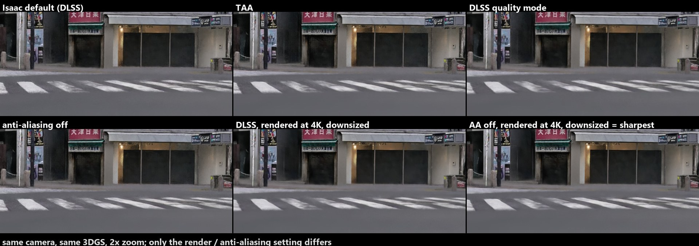
02 デモ1：Nova Carter＋RTX LiDARで街をなぞる
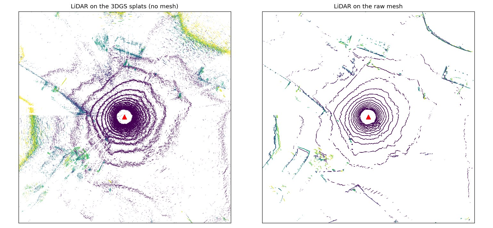
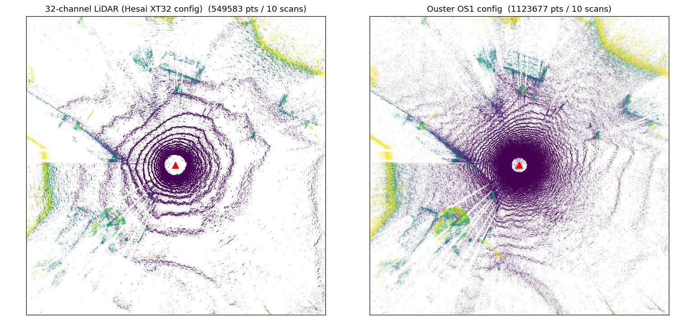
手順は4つです。①機体：Isaac標準のNova Carterを読み込み、同梱の差動駆動コントローラで動かします。②センサ：同梱のRTX LiDAR（実在機種の設定）を車体の上に子付けし、毎フレーム点群を読み出します。③制御：数m先の目標へ向く単純な向き制御。④描画：点群を世界座標に変換してビューポートに描きます。
- メッシュの返りが欲しいときは、コライダーと同形のメッシュにカットアウト透過のマテリアルを付けて置きます。カメラには写らずLiDARだけが当たるので、こちらも1回の走行で同時に取れます。
- LiDARの点を世界座標に戻すと、センサの取付高さ分だけ地面が低く出ました。取付オフセットを足すと一致します。
- ホイールの駆動設定を自分で上書きしない。資産の既定に任せた方が安定します。
- 速度を上げるとキャスターが振れてスピンします。生スキャン路面では歩く速さ程度が安定域。これはシミュ側の現象で実機の挙動ではないので、この環境で走行の安定性やゲインを詰めても実機には持ち込めません。
- 同じ場所へロボを読み直すと車体が消える。テイクごとにステージを開き直すのが確実です。ステージの開き直しを繰り返すと3DGSが真っ黒になることもあり、その時はIsaacを再起動します。
- LiDARの点群にはモーション歪みが入っていません（既定設定）。SLAM検証に使うなら別途有効化が要ります。
03 デモ2：純正メッシュの影を3DGSに落とす（太陽タイムラプス）
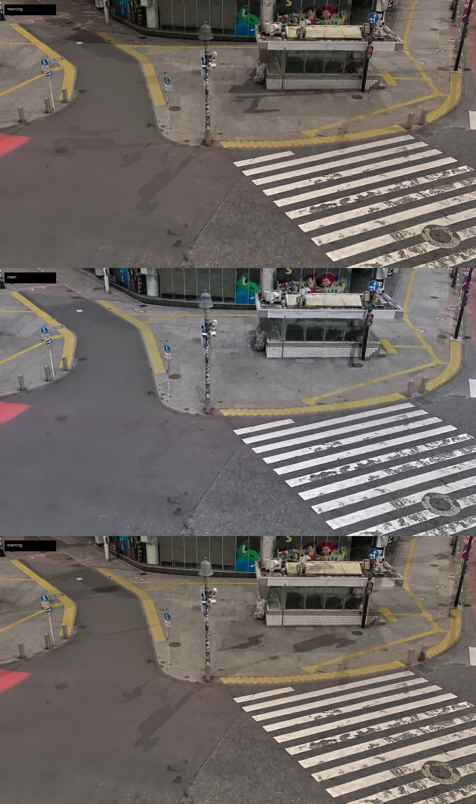
Omniverseの公式仕様にある通り、6.0ではメッシュの影が3DGSの上に落ちます（デモ1のロボの影がそれです）。ただしスプラットの色は焼き込みなので、ライトを足しても明るくならず、色温度も変わりません。「影だけは付けられる、リライトはできない」が6.0時点の正確な状態です。
建物や街灯の影を落とすには純正メッシュをキャスターにすればよいのですが、キャスターをカメラから隠せません。そこで3枚のレンダを合成しました：3DGSだけの絵、白く塗ったメッシュに太陽を当てた「影あり」の絵、同じく「影なし」の絵。影あり／影なしの比から影だけを取り出して、3DGSの絵に掛けます。
04 デモ3：地図を作ってゴールまで自律走行
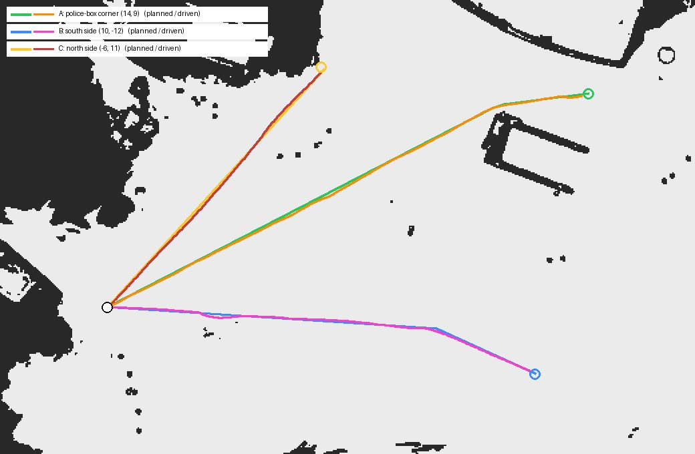
地図はIsaac同梱の占有格子ジェネレータで、コライダーから数秒で出ます。路面の小さな凹凸を障害物にしないよう、地面から少し上〜機体の高さまでの帯だけを見ます。経路は地図をロボの大きさ分ふくらませてから最短経路を引き、いくつかの経由点に間引いてロボが追従します。
- 占有格子のデータは、私たちの座標系の与え方では左右（x方向）が反転して出ました。反転を入れないと「障害物の無い所を避け、ある所へ突っ込む」経路になります（実際に最初は交番の真上がゴールになりました）。ジェネレータの仕様か私たちの変換のどちらで起きたかは切り分けていないので、答え合わせ用の地図（既知の形）と必ず照合してから使ってください。
- 見る帯の上端を機体の高さより低くすると、庇や標識の腕のように「その帯だけに張り出す物」が地図に載りません。今回のシーンでは走行域に該当物が無いことを確認しました。汎用には上端を機体より高めに。
- ふくらませる量が機体の外接円ぎりぎりだと安全余裕はありません。狭い所を通す用途では大きめに。
- 縁石はこの帯設定では障害物になりません。Nova Carterの前キャスターは縁石を越えられないので、歩道へ乗り上げる経路を許すなら帯の下端を下げてください。
ROS 2／Nav2について。Isaac Sim 6.0の公式手順でWindows向けの環境が案内されていますが、本記事ではROSを使わず自前の経路計画にしています。占有格子は画像に落とせますが、Nav2の地図形式には原点の取り方や色の意味などの規約があり、上のx反転を踏まえると変換は自明ではありません。Nav2での実走はまだしていません。
05 追試：3DGSに「意味ラベル」を持たせる
この環境の最大の穴は「セグメンテーションの正解が作れない」ことでした。そこでラベルをメッシュ側でなく3DGS側（点の一粒ごと）に持たせ、同じ点をクラス色で塗った複製を描く方式を試しました。3DGSは色を焼き込みのまま出す性質があるので、複製の色をクラス色にすればRGBと同じカメラ・同じ点からラベル画像が出て、メッシュを経由する方式より画素が合いやすくなります（半透明の合成や推定誤差、補完による境界のズレは残ります）。
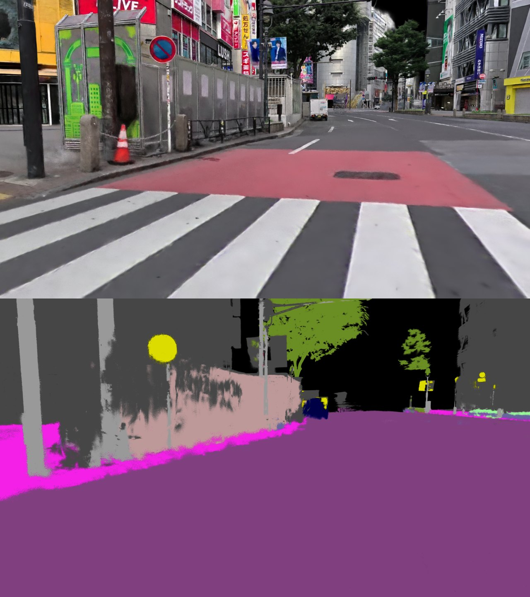
作り方：ロボットの目線で街を多方向から描画し、公開されている2Dのセグメンテーションモデルに見せてクラスを推定させます。その結果を、コライダーで「その視点から見えているか」を確かめながら3DGSの点ごとに投票で集約し、見えなかった点は近くの点から補います。最後に点の色をクラス色に置き換えた複製を書き出します（元データは無加工のまま、上書きレイヤだけを持ちます）。
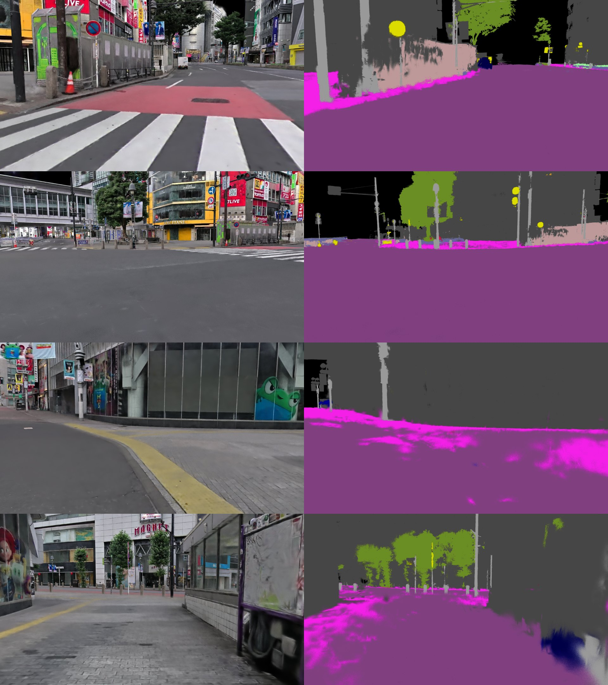
結果：新しい視点でも道路・建物・植生はほぼ正しく塗り分けられ、ポールのような細い物は苦手、歩道と道路の区別は不安定です。2Dモデル同士を比べても同程度の食い違いがあるので、3D側に集約したことによる損失は小さいと見ています。
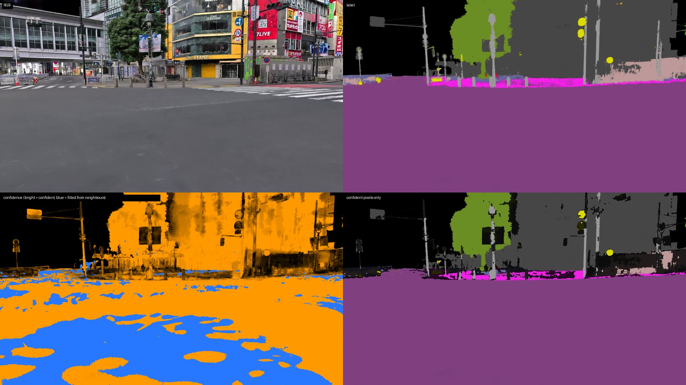
- ラベル源はAIの推定で、人手の正解とは照合していません。上の一致率は「同じ種類のモデルとどれだけ合うか」であって正解率ではありません。街灯を信号と誤るなど、2D側の誤りはそのまま3Dに伝わります。
- 歩道と道路の混同、細い物・境界、写り込んだ通行人は使えません。空は点が無いので黒（別途「無視」扱いが要ります）。補完した部分はクラス境界で滲みます。インスタンス（個体）IDもありません。
- 用途は擬似ラベル付きの新規視点生成／弱い教師でのデータ拡張まで。学習の正解として使うには、人手ラベルの小セットでの検証が先です。
06 渋谷の構造を読む：歩道・横断歩道の地図
ここまでのロボットは、地図の「空いている所」をただ走っていました。しかし渋谷スクランブル交差点で意味のあるシミュレーションをするには、どこが歩道で、どこが横断歩道で、どこが車道かをロボットに分からせる必要があります。歩行者用の配送ロボットは歩道を走り、横断歩道を青のうちに渡り、車道には出ない——この前提が無いと、渡り切れるかも待ち時間も評価できません。
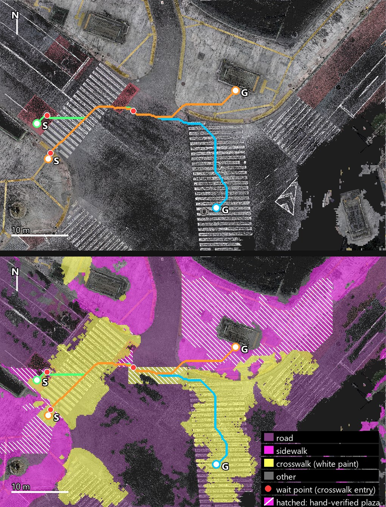
作り方は3段で、意味ラベルの手修正はしていません（スクランブル内の区域だけは横断歩道の配置からルールで足しています）。①ロボット目線で街を多方向から描画した画像（05節と同じ視点）を、街路の写真で学習した認識モデル（Mapillary Vistas学習のMask2Former。歩道・歩行者広場・横断歩道・縁石といった路面の種類を区別できます）に見せて、路面の種類を推定します。②その結果を、見えているかを確かめながら3DGSの点ごとに投票で集約します。③地面付近の点を真上から集計して、車道・歩道（広場を含む）・横断歩道の地図にします。このスキャンの範囲では、交番の島やタイル敷きの広場は「歩道」、4本の横断歩道は縞の形のまま出ます（車道の白線まわりや日陰の路面には誤りが残ります）。④スクランブル交差点は歩行者の青のあいだ交差点内のどこでも歩けるので、4本の横断歩道に囲まれた車道を「スクランブル内」として、青のときだけ通れる区域にしています。
この地図の上で、歩道は通りやすく、横断歩道はそれに次いで、スクランブル内はその次、車道は通らない、という重み付けで経路を引くと、図の水色のようにロボットは歩道→横断歩道→（交番の島で待つ）→横断歩道と、歩道と横断歩道を優先する道順を選びます（人流や混雑、右左どちら側を歩くかといった歩行者の癖は入っていません）。横断歩道の中では縞の真ん中を通り、端をかすめません。ロボットの幅（約0.7m）に左右の余裕と地図の粗さを見込むと通り抜けに1.3m弱が要り、TSUTAYA側の歩道に上がるボラードのすき間（1.3〜1.5m）は余裕が無いため通れない判定になり、ロボットは横断歩道からスクランブル内の縁を通って交番の島へ向かいます——歩道に上がれるかどうかは、この間隔を安全に抜ける制御精度で決まります。問題設定として参照したのは、NVIDIAがIsaac SimのMobilityGenで示す「占有地図＋経路の記録」と、3DGSのデジタルツインに可視性を考えた意味ラベルを融合する最近の研究です。ここでは研究手法の再実装ではなく、検証用に簡略化した作りにしています。
07 状況1：配送ロボットが歩行者ルールで渡る（信号待ち）
この環境で最初に試す価値があるのが「歩道を走る配送ロボットが、渋谷の信号サイクルの中で目的地に着けるか」です。街の構造と実際の信号を入れると、単なる走行デモではなく導入前の判断材料——速度の仕様、待つ場所、カメラの画角、信号待ちを含む所要時間の見積もり——になります。シナリオは西の広場（駅側）を出て、北西の横断歩道を渡り、スクランブル内の縁を通って交番の島まで行き、島で信号を待って中央の横断歩道を南へ渡る（06節の図の水色。信号待ちは2か所）。渋谷スクランブル交差点の歩行者信号は、実測記録（信号サイクル調査サイト・平日18時台）で1周140秒、歩行者の青は47秒（点灯37秒＋点滅10秒）、赤は93秒。この値をそのままシミュレーションの信号にしました。ロボットのルールは歩行者に倣い、点滅中は渡り始めない、渡り切る時間が残っていなければ次の青を待つ、渡り始めたら途中で止まらないの3つです（渡り切るまでには点滅の10秒も使う設定）。道路交通法上の位置付けの整理ではなく、歩行者信号に従う低速の配送ロボットの運用ルールとして置いています。
信号は目で見て判断させます。スキャンの中の歩行者信号は色が焼き込まれていて変えられないので、渡る先の縁石側・高さ2.5mの実物と同じ位置関係に仮想の信号灯（赤／青／点滅）を置き、車体前方の広角カメラの映像から色を認識させました。認識は、地図上で分かっている信号灯の位置をカメラに投影した小さな領域だけを見て、鮮やかな赤か緑かを判定し、短い時間の中で緑が点いたり消えたりすれば点滅と判定する単純なものです。判断のルールは、信号の残り時間を通信で受け取らない単独運用を想定して安全側に倒し、自分の目で赤から青に変わるのを見た青でしか渡り始めない（青の途中で横断歩道に着いたら、残り時間が分からないので次の青を待つ）としました。
結果：西の広場の縁で赤を見て止まり、赤から青に変わったのを見て出発。北西の横断歩道からスクランブル内の縁を通って交番の島まで約27mを約30秒で渡り切り（青は残り17秒）、島の縁の待ち位置に着く頃には点滅に変わっていました。次の赤（93秒）を待ち、青に変わったのを見てから中央の横断歩道16mを約20秒で渡って、出発から約3分で到着。内訳は、最初の赤待ち10秒、横断1が30秒、島までの移動が十数秒、島での待ちが約1分40秒、横断2が20秒で、信号待ちは合計約2分です。渋谷の信号は青が短く赤が長いので、島で一度待つだけで所要時間の半分以上が待ち時間になります。この条件（他の歩行者・車なし）では、目的地までの時間を決めていたのは走行速度ではなく横断を始めるタイミングでした。同じ経路を毎秒0.6mで走らせると、最初の27mは青の始まりに出て点滅の終わりと同時に渡り切り（余裕はほぼゼロで、認識や加速の遅れがあれば渡り切れません）、島では同じ赤を待つので、到着は約3分と歩く速さのときと大きくは変わりませんでした。信号の認識は、この走行で判定した約900コマのうち赤はほぼ全て、点灯中の青は9割を正しく読み、誤って逆の色を読んだのは2コマ、見落としの多くは点滅でした（横断判断が成り立つかの確認であって、認識器の性能評価ではありません）。待っている間に信号灯が視野の端に外れると青を丸ごと1回見逃すので、カメラは広角（横約80度）にしています。
歩行者を入れると。上の結果は他の歩行者がいない最良ケースなので、青のあいだだけ横断歩道と斜め横断を行き交う歩行者役（人の背丈の柱、24人）を足しました。歩行者役は赤では縁石で待ち、青になると数秒ずつずれて歩き出し、渡り終えると次の青を待ちます。ロボットは前方の枠内に人が入ると止まって道を譲ります。
24人では、道を譲るための停止が7回・合計55秒、最初の27mの横断は譲りながら37秒かかって点滅に入ってから渡り終え（青の残り9秒）、到着は約3分40秒。人がいない場合より50秒ほど遅く、ゴール直前でも人に塞がれて赤の中で止まりました。人数を32人に増やすと、横断そのものより縁石で信号を待つ人に前を塞がれる時間が伸びて（譲るための停止が合計4分超）、到着は5分を超えました。人の脇を抜ける動きが無いと交差点では前に進めない、という当たり前のことが数字で出ます。歩行者を入れると、渡り切れるかどうかは信号だけでなく横断歩道の上で何回譲るかで決まり、点滅で渡り終える危うい横断が普通に起きます。歩行者役は決まった線を歩くだけで避け合いはしないので、これも実際より甘い見積もりです。
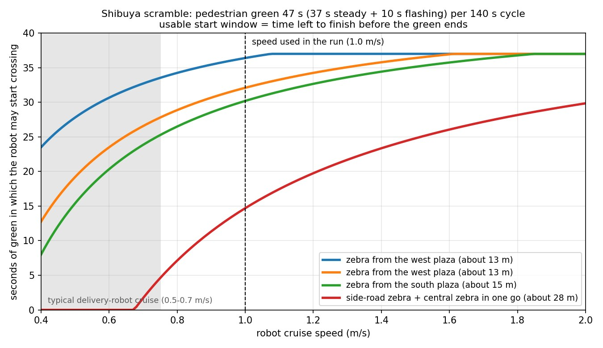
先行事例との関係。歩道ロボットの横断は研究でも中心的なテーマで、横断歩道で歩行者の流れと「青のうちに渡り切る」制約を同時に扱う研究（Chugoら, 2021）、配送ロボットの横断判断モジュールをシミュレーションで検証してから実機で試した研究（Control Engineering Practice, 2024）、実機センサデータから横断可否を学習した研究（Radwanら, 2017）があります。ベンチマークとしては、実在の街区の3DGSをIsaac Simでロボットの評価環境に使う点でSidewalkBench（2026）が近く、そちらは歩行者への反応や長距離走行まで評価しています。本記事の位置付けは、実在の交差点の形と実測の信号サイクルで、信号を目で見ながら「渡れるか・どれだけ待つか」を数えるところまでで、他の歩行者や車は入っていません。歩行者流を入れた評価はSidewalkBenchのような枠組みが先にあります。
- 信号は「全横断歩道が同時に青」のスクランブル方式を仮定し、上の実測値で固定しています。時間帯で変わるので、対象時間帯の実測が要ります。信号灯はスキャン内の実物ではなく、同じ位置関係に置いた仮想の灯です。
- 歩行者役は決まった線を歩くだけの簡易モデルで、避け合いはせず、車両はいません。人がいない場合の待ち時間は最良ケースです。
- スキャン範囲の外（南の広場や東の歩道）はロボットに見えないため、経路の始点・終点はスキャン内の歩道に置いています。ボラードの間を抜けて歩道に上がる動きは、この機体と制御では安全側に見て許していません。
08 状況2：全方向から来る歩行者の中で止まる・再発進する
スクランブル交差点特有の「全方向から人が来る」状況で、ロボットが止まれるか・再発進できるかを確かめました。LiDARは3DGSの街と歩行者役の両方をきちんと捉え、横切りに対して停止・再発進しました。分からないこと：本物の人の動き（避け合い・立ち止まり）は入っていません。人流データと歩行者エージェントを入れると、状況1の待ち時間の見積もりも現実に近づきます。
09 状況3：言葉で指定したランドマークへ行く
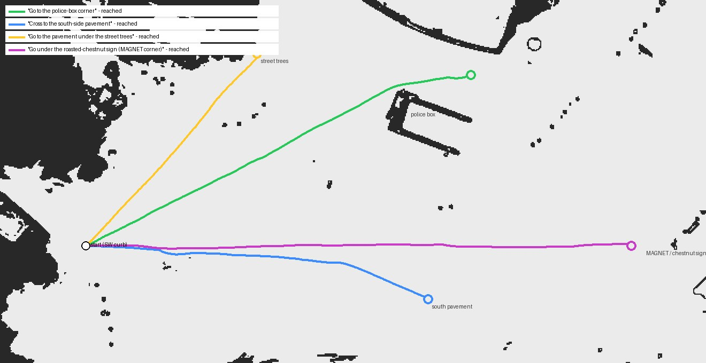
今回は「言葉→地図上の座標」を人手で対応付け、そこへ自律で走らせました。4課題すべて到達。06節の意味地図と組み合わせれば、同じ課題を「歩道を通って」解かせることもできます。分からないこと：言葉から目的地を理解する部分（言語モデル側）は未接続で、課題集も4本だけです。
10 状況4：現地に行く前に決める（巡回の死角・イベント設営）
ロボットの学習以外にも、実在の配置だからこそ出る答えがあります。記事冒頭の写真（LiDARを回しながらの巡回）では、1往復で周囲の路面の85%は視認でき、残る死角は交番の裏・ポールと車止めの陰・建物の凹みでした。警備ロボの巡回経路やカメラの増設位置を、現地に行く前に議論できます（センサ高さは1種類、動く物による一時的な遮蔽は未考慮）。
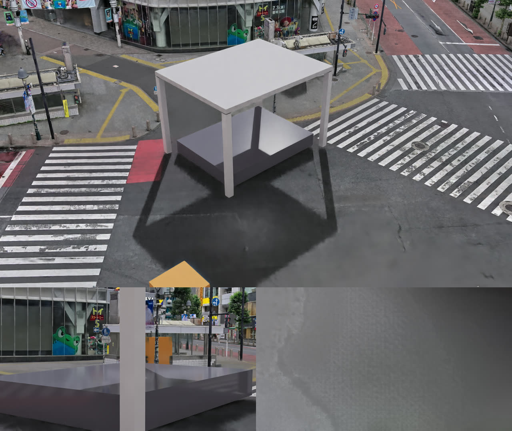
仮設物の位置と実在の構造物の干渉、カメラからの見え方、動線の空きを、実寸の街で確認できます。ロケハン3D本業との相乗効果が最も大きい項目で、機材リストの寸法さえあれば同じ手順で置けます。
11 実用シミュとして足りないもの
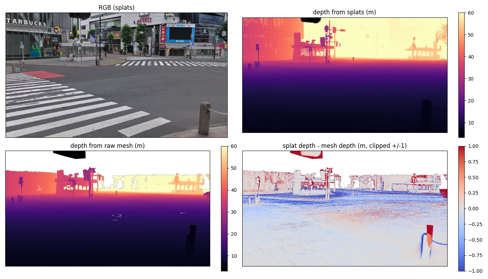
「動いた」と「使える」は違うので、ここに正直に書いておきます。
- カメラが見る面とLiDAR／衝突が見る面が別物です。RGBとLiDARはスプラット、衝突は純正メッシュで、路面で数cm、遠景では1m超ずれます。カメラとLiDARは同じ面を見るのでフュージョン用途には都合が良い一方、「LiDARが返す面」と「ぶつかる面」が一致しないことは覚えておいてください。
- 意味ラベルは擬似ラベル止まり（05節）。人手正解との照合とインスタンスIDが未了です（信頼度による選別はできます）。地面の意味地図も半自動（06節）で、広場と短い横断歩道は人手で直しています。
- 信号と歩行者。信号は実測値で固定した仮定で、信号灯は仮想のもの。他の歩行者・車両はいません。状況1の待ち時間は最良ケースです。縁石はこの交差点の横断歩道まわりにはほぼ無く（バリアフリー化）、段差走破の評価には別の場所が要ります。
- ゴーストと歩行者。スキャンに写り込んだ通行人は静止障害物として残り、動く人はいません。
- センサの現実味。点群にモーション歪みが無く、反射強度・IMU・カメラのノイズも既定のまま。同じ場所の実機ログとの突き合わせは一度も行っていません。
- ROS 2／Nav2／Linux。いずれも未検証。ROSを使っていないのでTFやロボット記述の提供もありません。撮影中はリアルタイムよりかなり遅く、人が操作する用途には最適化が要ります。
- リライトは影のみ。夜間・雨天は作れません。速度域は歩く速さまで（高速・車両スケールは前回のPhysX Vehicle側）。
12 まとめ・納品物
使える用途：USD化、センサ出力（RGB・深度・LiDAR・擬似ラベル）の取得、経路候補の比較、信号待ちを含む所要時間の概算、設営・巡回の事前検討。そのままでは使えない用途：制御性能の保証、知覚精度の評価、実機転移の根拠。
- センサ：RTX LiDARは3DGSに当たる（不可視のコライダーには当たらない）。メッシュの返りが欲しければカットアウト透過材のメッシュを置く。点を世界座標へ戻すときは取付高さを足す。
- 影：6.0ではメッシュの影が3DGSに落ちる。キャスターは隠せないので3枚合成。リライトは不可。
- 地図・経路：同梱の占有格子ジェネレータで数秒。本環境の変換では左右反転して出たので、必ず答え合わせ用の地図と照合。
- 機体：Nova Carterは同梱コントローラに任せ、歩く速さまで、テイクごとにステージを開き直す。
- 意味ラベル：3DGS側に持たせればRGBと画素一致で描ける。ただし擬似ラベルで、正解データではない。
- 街の構造：意味ラベル＋縞の周期で歩道・横断歩道・車道の地面地図を作り、人と同じ道順の経路が引ける（広場と短い横断歩道は人手確認）。
- 状況1（配送×信号）：実測の信号サイクル（青47秒／1周140秒）で、仮想の信号灯をカメラで読みながら渡らせると、約27mと16mの2回の横断で待ちが約2分、所要約3分。歩行者役24人を入れると譲りで50秒延び、32人では縁石で待つ人に塞がれて5分超。ボトルネックは速度でなく、横断を始めるタイミングと人の脇を抜ける動き。
- 状況2〜4：歩行者の中での停止・再発進、ランドマーク到達、巡回死角と設営検証は、判断材料の入口として使える。
- 使う前提：カメラとLiDAR・衝突は別の面。実機ログとの突き合わせ・Nav2実走・Linuxは未検証。用途はUSD化・センサ出力の取得・経路デモといったPoCまでで、制御性能・知覚精度の評価や実機転移の根拠にはそのままでは使えません。
この環境をお渡しする場合の納品物は、2層USD（3DGS参照＋不可視コライダー）／センサ用メッシュ／占有格子（画像＋原点・解像度）／スポーン地点と走行検証済みレーン／再現スクリプトに加えて、動作確認バージョンと座標系・単位の仕様書／受入テスト用スクリプトと期待出力／スキャンデータの利用許諾範囲です。最後の点は重要で、渋谷の生スキャンには通行人の顔や車両ナンバーが写り込んでいます。AI学習を含む商用納品では、写り込みのマスク処理か利用範囲の限定を契約に含めます。本記事の動画は原データのままで、人物が遠く低解像度でしか写らないカットを選んでいますが個別のマスク処理はしていません——問題のあるカットはご指摘があれば差し替えます。
ロケハン3Dでは、実在の空間を
ロボット開発に使える形でスキャンします
LiDARと写真を同時に取得するため、見た目の3DGSと実測メッシュ・点群は同一の座標系・同一原点で揃います。ただし表面位置は完全一致ではなく数cmの差が残ります。この誤差を前提にできる用途かを含めて、屋外・屋内を問わずIsaac Sim向けの2層環境と占有格子までご相談ください。
スキャンの相談をする →